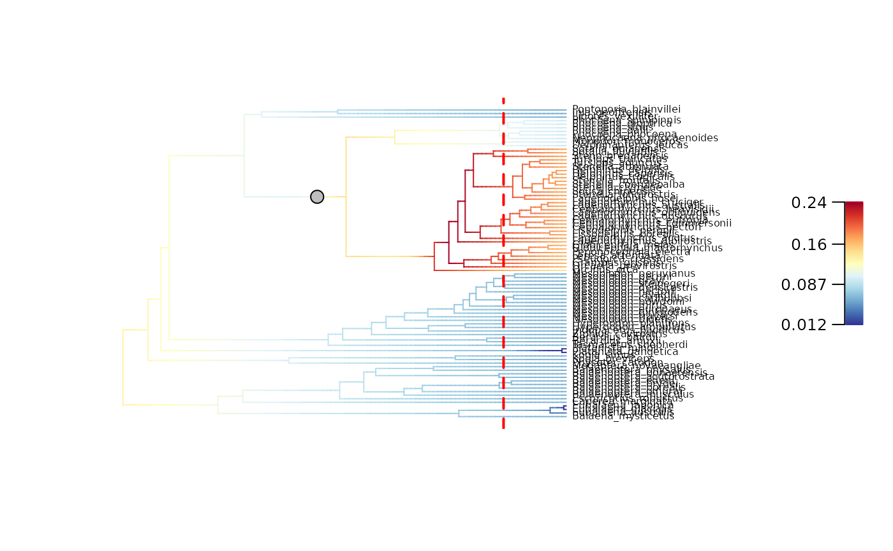
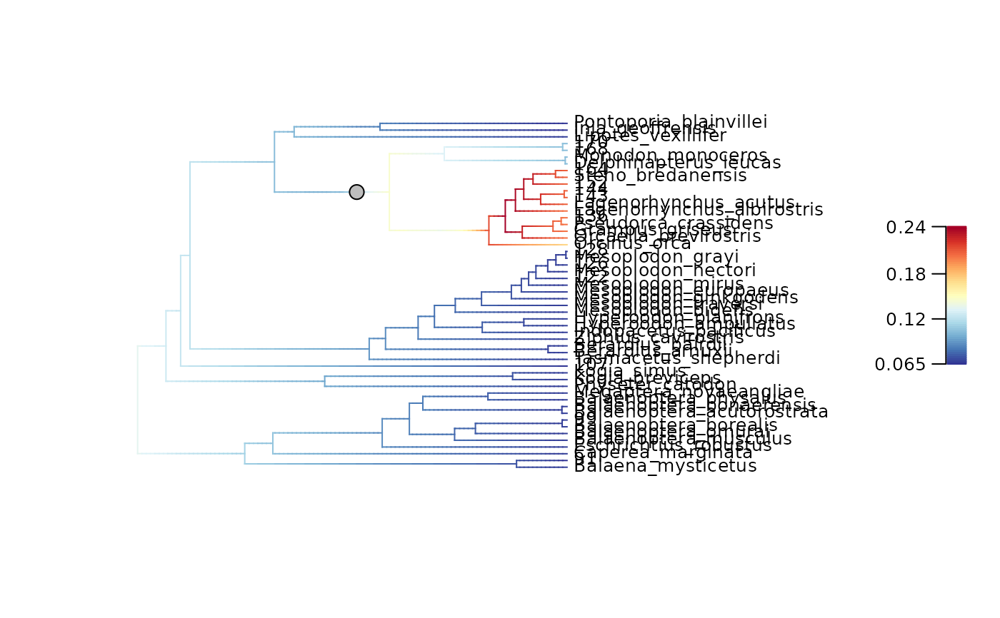
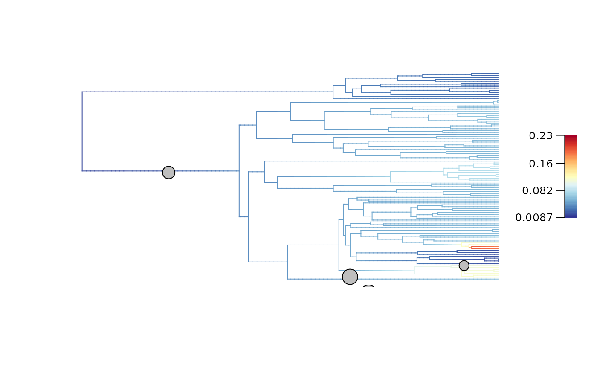
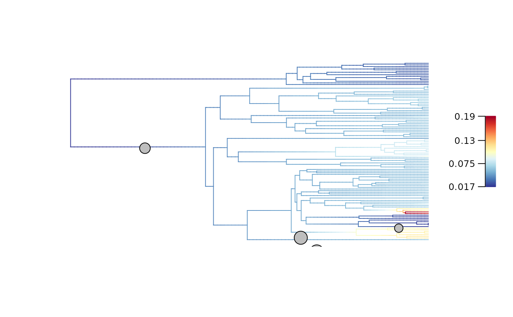

Update diversification rates/regimes mapped on a phylogeny up to a given time in the past
Source:R/update_rates_and_regimes_for_focal_time.R
update_rates_and_regimes_for_focal_time.RdUpdates an object of class "bammdata" to obtain the diversification rates/regimes
found along branches at a specific time in the past (i.e. the focal_time).
Optionally, the function can update the object to display a mapped phylogeny such as
branches overlapping the focal_time are shorten to the focal_time.
Usage
update_rates_and_regimes_for_focal_time(
BAMM_object,
focal_time,
update_rates = TRUE,
update_regimes = TRUE,
update_tree = FALSE,
update_plot = FALSE,
update_all_elements = FALSE,
keep_tip_labels = TRUE,
verbose = TRUE
)Arguments
- BAMM_object
Object of class
"bammdata", typically generated withprepare_diversification_data(), that contains a phylogenetic tree and associated diversification rate mapping across selected posterior samples. The phylogenetic tree must be rooted and fully resolved/dichotomous, but it does not need to be ultrametric (it can includes fossils).- focal_time
Numerical. The time, in terms of time distance from the present, at which the tree and rate mapping must be cut. It must be smaller than the root age of the phylogeny.
- update_rates
Logical. Specify whether diversification rates stored in
$tipLambda(speciation) and$tipMu(extinction) must be updated to summarize rates found along branches atfocal_time. Default isTRUE.- update_regimes
Logical. Specify whether diversification regimes stored in
$tipStatesmust be updated to summarize regimes found along branches atfocal_time. Default isTRUE.- update_tree
Logical. Specify whether to update the phylogeny such as all branches that are younger than the
focal_timeare cut-off. Default isFALSE.- update_plot
Logical. Specify whether to update the phylogeny AND the elements used by
plot_BAMM_rates()to plot diversification rates on the phylogeny such as all branches that are younger than thefocal_timeare cut-off. Default isFALSE. If set toTRUE, it will override theupdate_treeparameter and update the phylogeny.- update_all_elements
Logical. Specify whether to update all the elements in the object, including rates/regimes/phylogeny/elements for
plot_BAMM_rates()/all other elements. Default isFALSE. If set toTRUE, it will override otherupdate_*parameters and update all elements.- keep_tip_labels
Logical. Should terminal branches with a single descendant tip retain their initial
tip.labelon the updated phylogeny and diversification rate mapping? Default isTRUE. If set toFALSE, the tipward node ID will be used as label for all tips.- verbose
Logical. Should progression be displayed? A message will be printed for every batch of 100 BAMM posterior samples updated. Default is
TRUE.
Value
The function returns a list as an updated BAMM_object of class "bammdata".
Phylogeny-related elements used to plot a phylogeny with ape::plot.phylo():
$edgeMatrix of integers. Defines the tree topology by providing rootward and tipward node ID of each edge.$NnodeInteger. Number of internal nodes.$tip.labelVector of character strings. Labels of all tips, including fossils older thanfocal_timeif present.If
keep_tip_labels = TRUE, cut-off branches with a single descendant tip retain their initialtip.label.If
keep_tip_labels = FALSE, all cut-off branches are labeled using their tipward node ID.
$edge.lengthVector of numerical. Length of edges/branches.$node.labelVector of character strings. Labels of all internal nodes. (Present only if present in the initialBAMM_object)
BAMM internal elements used for tree exploration:
$beginVector of numerical. Absolute time since root of edge/branch start (rootward).$endVector of numerical. Absolute time since root of edge/branch end (tipward).$downseqVector of integers. Order of node visits when using a pre-order tree traversal.$lastvisitID of the last node visited when starting from the node in the corresponding position in$downseq.
BAMM elements summarizing diversification data:
$numberEventsVector of integer. Number of events/macroevolutionary regimes (k+1) recorded in each posterior configuration. k = number of shifts.$eventDataList of data.frames. One per posterior sample. Records shift events and macroevolutionary regimes parameters. 1st line = Background root regime.$eventVectorsList of integer vectors. One per posterior sample. Record regime ID per branches.$tipStatesList of named integer vectors. One per posterior sample. Record regime ID per tips present atfocal_time. Updated ifupdate_regimes = TRUE.$tipLambdaList of named numerical vectors. One per posterior sample. Record speciation rates per tips present atfocal_time. Updated ifupdate_rates = TRUE.$tipMuList of named numerical vectors. One per posterior sample. Record extinction rates per tips present atfocal_time. Updated ifupdate_rates = TRUE.$eventBranchSegsList of matrix of numerical. One per posterior sample. Record regime ID per segments of branches.$meanTipLambdaVector of named numerical. Mean tip speciation rates across all posterior configurations of tips present atfocal_time(does not includes older fossils).$meanTipMuVector of named numerical. Mean tip extinction rates across all posterior configurations of tips present atfocal_time(does not includes older fossils).$typeCharacter string. Set the type of data modeled with BAMM. Should be "diversification".
Additional elements providing key information for downstream analyses:
$expectedNumberOfShiftsInteger. The expected number of regime shifts used to set the prior in BAMM.$MSP_treeObject of classphylo. List of 4 elements duplicating information from the Phylogeny-related elements above, except$MSP_tree$edge.lengthis recording the Marginal Shift Probability of each branch (i.e., the probability of a regime shift to occur along each branch) whose origin is older thatfocal_time.$MAP_indicesVector of integers. The indices of the Maximum A Posteriori probability (MAP) configurations among the posterior samples.$MAP_BAMM_object. List of 18 elements of class"bammdata" recording the mean rates and regime shift locations found across the Maximum A Posteriori probability (MAP) configuration. All BAMM elements summarizing diversification data holds a single entry describing this the mean diversification history, updated for thefocal_time`.$MSC_indicesVector of integers. The indices of the Maximum Shift Credibility (MSC) configurations among the posterior samples.$MSC_BAMM_objectList of 18 elements of class"bammdata" recording the mean rates and regime shift locations found across the Maximum Shift Credibility (MSC) configurations. All BAMM elements summarizing diversification data holds a single entry describing this mean diversification history, updated for thefocal_time`.
New elements added to provide update information:
$root_ageInteger. Stores the age of the root of the tree.$nodes_ID_dfData.frame with two columns. Provides the conversion from thenew_node_IDto theinitial_node_ID. Each row is a node.$initial_nodes_IDVector of character strings. Provides the initial ID of internal nodes. Used to plot internal node IDs as labels withape::nodelabels().$edges_ID_dfData.frame with two columns. Provides the conversion from thenew_edge_IDto theinitial_edge_ID. Each row is an edge/branch.$initial_edges_IDVector of character strings. Provides the initial ID of edges/branches. Used to plot edge/branch IDs as labels withape::edgelabels().$dtratesList of three elements.1/
$dtrates$tauNumerical. Resolution factor describing the fraction of each segment length used inplot_BAMM_rates()compared to the full depth of the initial tree (i.e., the root_age)2/
$dtrates$ratesList of two numerical vectors. Speciation and extinction rates along segments used byplot_BAMM_rates().3/
$dtrates$tmatMatrix of numerical. Start and end times of segments in term of distance to the root.
$initial_colorbreaksList of three vectors of numerical. Rate values of the percentiles delimiting the bins for mapping rates to colors withBAMMtools::plot.bammdata(). Each element provides values for different type of rates ($speciation,$extinction,$net_diversification).$focal_timeInteger. The time, in terms of time distance from the present, at which the rates/regimes were extracted and the tree was eventually cut.
Details
The object of class "bammdata" (BAMM_object) is cut-off at a specific time in the past
(i.e. the focal_time) and the current diversification rate values of the overlapping edges/branches are extracted.
—– Update diversification rate data —–
If update_rates = TRUE, diversification rates of branches overlapping with focal_time
will be updated. Each cut-off branches form a new tip present at focal_time with updated associated
diversification rate data. Fossils older than focal_time do not yield any data.
$tipLambdacontains speciation rates.$tipMucontains extinction rates.
If update_regimes = TRUE, diversification regimes of branches overlapping with focal_time
will be updated. Each cut-off branches form a new tip present at focal_time with updated associated
diversification regime ID found in $tipStates. Fossils older than focal_time do not yield any data.
—– Update the phylogeny —–
If update_tree = TRUE, elements defining the phylogeny, as in an "phylo" object
will be updated such as all branches that are younger than the focal_time are cut-off:
$edgedefines the tree topology.$Nnodedefines the number of internal nodes.$tip.labelprovides the labels of all tips, including fossils older thanfocal_timeif present.$edge.lengthprovides length of all branches.$node.labelprovides the labels of all internal nodes. (Optional)
—– Update the plot from plot_BAMM_rates() —–
If update_plot = TRUE, elements used to plot diversification rates on the phylogeny
using plot_BAMM_rates() will be updated such as all branches that are younger
than the focal_time are cut-off:
$beginprovides absolute time since root of edge/branch start (rootward).$endprovides absolute time since root of edge/branch end (tipward).$eventVectorsprovides regime membership per branches in each posterior sample configuration.$eventBranchSegsprovides regime membership per segments of branches in each posterior sample configuration.$dtratesprovides mean speciation and extinction rates along segments of branches, and resolution fraction (tau) describing the fraction of each segment length compared to the full depth of the initial tree (i.e., the root_age).
Examples
# ----- Example 1: Extant whales (87 taxa) ----- #
## Load the BAMM_object summarizing 1000 posterior samples of BAMM
data(whale_BAMM_object, package = "deepSTRAPP")
## Set focal-time to 5 My
focal_time = 5
## Update the BAMM object
whale_BAMM_object_5My <- update_rates_and_regimes_for_focal_time(
BAMM_object = whale_BAMM_object,
focal_time = 5,
update_rates = TRUE, update_regimes = TRUE,
update_tree = TRUE, update_plot = TRUE,
update_all_elements = TRUE,
keep_tip_labels = TRUE,
verbose = TRUE)
#> 2025-09-24 08:58:01.147941 - Tip states/rates updated for BAMM posterior sample n°100/1000
#> 2025-09-24 08:58:01.401705 - Tip states/rates updated for BAMM posterior sample n°200/1000
#> 2025-09-24 08:58:01.577382 - Tip states/rates updated for BAMM posterior sample n°300/1000
#> 2025-09-24 08:58:01.748289 - Tip states/rates updated for BAMM posterior sample n°400/1000
#> 2025-09-24 08:58:01.95243 - Tip states/rates updated for BAMM posterior sample n°500/1000
#> 2025-09-24 08:58:02.146103 - Tip states/rates updated for BAMM posterior sample n°600/1000
#> 2025-09-24 08:58:02.332567 - Tip states/rates updated for BAMM posterior sample n°700/1000
#> 2025-09-24 08:58:02.545307 - Tip states/rates updated for BAMM posterior sample n°800/1000
#> 2025-09-24 08:58:02.727798 - Tip states/rates updated for BAMM posterior sample n°900/1000
#> 2025-09-24 08:58:02.909859 - Tip states/rates updated for BAMM posterior sample n°1000/1000
# Add "phylo" class to be compatible with phytools::nodeHeights()
class(whale_BAMM_object) <- unique(c(class(whale_BAMM_object), "phylo"))
root_age <- max(phytools::nodeHeights(whale_BAMM_object)[,2])
# Remove temporary "phylo" class
class(whale_BAMM_object) <- setdiff(class(whale_BAMM_object), "phylo")
## Plot initial BAMM_object for t = 0 My
plot_BAMM_rates(whale_BAMM_object, add_regime_shifts = TRUE,
labels = TRUE, legend = TRUE,
par.reset = FALSE) # Keep plotting parameters in memory to use abline().
abline(v = root_age - focal_time,
col = "red", lty = 2, lwd = 2)

## Plot updated BAMM_object for t = 5 My
plot_BAMM_rates(whale_BAMM_object_5My, add_regime_shifts = TRUE,
labels = TRUE, legend = TRUE)

# ----- Example 2: Extant Ponerinae (1,534 taxa) ----- #
## Load the BAMM_object summarizing 1000 posterior samples of BAMM
data(Ponerinae_BAMM_object, package = "deepSTRAPP")
## Set focal-time to 10 My
focal_time = 10
if (FALSE) { # \dontrun{
## Update the BAMM object (May take several minutes to run)
Ponerinae_BAMM_object_10My <- update_rates_and_regimes_for_focal_time(
BAMM_object = Ponerinae_BAMM_object,
focal_time = focal_time,
update_rates = TRUE, update_regimes = TRUE,
update_tree = TRUE, update_plot = TRUE,
update_all_elements = TRUE,
keep_tip_labels = TRUE,
verbose = TRUE) } # }
## Load results to save time
data(Ponerinae_BAMM_object_10My, package = "deepSTRAPP")
## Extract root age
# Add temporarily the "phylo" class to be compatible with phytools::nodeHeights()
class(Ponerinae_BAMM_object) <- unique(c(class(Ponerinae_BAMM_object), "phylo"))
root_age <- max(phytools::nodeHeights(Ponerinae_BAMM_object)[,2])
# Remove temporary "phylo" class
class(Ponerinae_BAMM_object) <- setdiff(class(Ponerinae_BAMM_object), "phylo")
## Plot diversification rates on the initial tree
plot_BAMM_rates(Ponerinae_BAMM_object,
legend = TRUE, labels = FALSE)
abline(v = root_age - focal_time,
col = "red", lty = 2, lwd = 2)
 ## Plot diversification rates and regime shifts on the updated tree (cut-off for 10 My)
# Keep the initial color scheme
plot_BAMM_rates(Ponerinae_BAMM_object_10My, legend = TRUE, labels = FALSE,
colorbreaks = Ponerinae_BAMM_object_10My$initial_colorbreaks$net_diversification)
## Plot diversification rates and regime shifts on the updated tree (cut-off for 10 My)
# Keep the initial color scheme
plot_BAMM_rates(Ponerinae_BAMM_object_10My, legend = TRUE, labels = FALSE,
colorbreaks = Ponerinae_BAMM_object_10My$initial_colorbreaks$net_diversification)

# Use a new color scheme mapped on the new distribution of rates
plot_BAMM_rates(Ponerinae_BAMM_object_10My, legend = TRUE, labels = FALSE)
